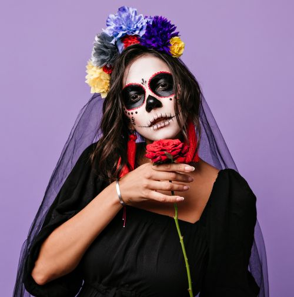
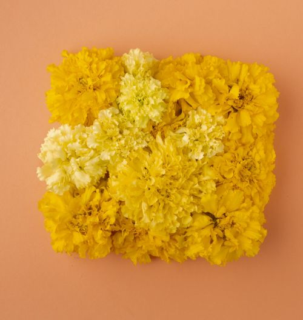

Alebrijes:
Este es un elemento que, aunque forma parte del folclore mexicano, originalmente no estaba relacionado con el Día de Los Muertos. Según la cultura popular, los alebrijes son criaturas fantásticas que mezclan diferentes partes de animales y actúan como guías espirituales. La versión más conocida de su creación es la del artesano Pedro Lineares. A causa de un extraño sueño, donde criaturas como un león con cabeza de perro y un burro con alas lo perseguían y gritaban “alebrijes”, despertó, inmediatamente se levantó de la cama y comenzó a realizar coloridos modelos de estos animales sobrenaturales. Con el tiempo, y a medida que tuvieron éxito, también fueron incluidos en algunos altares del Día de Muertos para que sirvieran de guías para los seres queridos fallecidos.
Altar en casas:
En todo México encontrarás altares, ubicados en lugares públicos como hoteles e iglesias, así como en hogares que suelen tener sus puertas abiertas. Se celebran de diferentes maneras, pero, por lo general, incluyen ofrendas como agua, velas, calaveras de azúcar, pan de muerto, frutas y alimentos y bebidas que al difunto le gustaba comer y beber en las fotos de los difuntos homenajeados en el altar.
Duración de la celebración:
Sin duda, el Día de Los Muertos es la festividad más importante de México. Las celebraciones comienzan entre el 25 y 28 de octubre y finalizan entre el 2 y 3 de noviembre. Y las fiestas empiezan desde el mediodía y duran hasta altas horas de la noche.
Reconocimiento por la UNESCO:
El patrimonio cultural no son sólo monumentos y colecciones de objetos. La Organización de las Naciones Unidas para la Educación, la Ciencia y la Cultura (Unesco) afirma que el patrimonio cultural también incluye expresiones vivas de la cultura (las tradiciones) transmitidas de generación en generación. En 2008, la UNESCO reconoció la importancia del Día de los Muertos al agregar la festividad a su lista de Patrimonio Cultural Inmaterial de la Humanidad.
Cómo se viste la gente:
Disfrazarse de esqueletos es parte de la tradición. Personas de todas las edades tienen sus rostros pintados artísticamente para que parezcan calaveras y, imitando la Calavera Catrina, la mayoría usa trajes, así como vestidos coloridos con flores.
Carnaval:
La Ciudad de México organiza el “Carnaval de Calaveras” en Avenida Reforma. Siendo conocido por ser un evento animado y grandioso. Los colores intensos, trajes creativos, música animada y carrozas marcan la celebración mexicana. Además, también se caracteriza por la diversidad, ya que cada estado del país tiene sus propios ritmos, ritos y caracteres tradicionales.
Desfiles
El Día de los Muertos, una de las celebraciones más icónicas de México, se caracteriza por desfiles vibrantes y emotivos. El evento honra a los muertos con alegría, simbolizando el ciclo de la vida y la conexión entre los vivos y los fallecidos. Los desfiles, como el famoso Desfile de Día de los Muertos en la Ciudad de México, destacan por sus colores, música y disfraces deslumbrantes. Figuras de calaveras y las representaciones de La Catrina, símbolo elegante de la muerte, dominan la escena.
Durante el desfile, las calles se llenan de bailarines, músicos y carros alegóricos decorados con flores, especialmente el cempasúchil (flor de cempasúchil o flor de muertos), que se cree guía a los espíritus. Este evento no solo refleja el orgullo cultural mexicano, sino que también se ha convertido en un atractivo turístico mundial. Es un momento único donde tradición y modernidad se encuentran, celebrando la vida y la memoria con creatividad y entusiasmo.
Significado de algunas flores

La Catrina:
Es uno de los mayores símbolos del Día de Los Muertos desde su creación por el artista José Guadalupe Posada, “La Catrina” se convirtió en un símbolo del Día de Muertos en México. Maquillaje, vestuario, historias… Catrina representa a una mujer de la alta sociedad, que se convirtió en un gran personaje en esta época del año. Como resultado, se convirtió en una gran inspiración hasta el día de hoy.

Flor Cempasuchi:
Cempasuchi es la flor oficial del Día de Los Muertos. Es conocido por sus pétalos amarillos y naranjas. En esta época del año se difunde por todas partes, en jarrones, altares, arcos de flores y todo tipo de decoración. Esto sucede porque en la tradición mexicana, esta flor se utiliza para guiar a las almas de regreso a sus altares.

O filme Viva – A Vida é uma Festa, cujo o nome original é "Coco", produzido pela Disney/Pixar, se inspira fortemente na cultura do Dia dos Mortos, e capta a essência desse dia, destacando temas como a família, a memória, a celebração da vida e os antepassados.
A história, se passa no México, é centrada em torno de um jovem garoto de 12 anos chamado Miguel, apaixonado por música e sonha em se tornar um grande músico, apesar do fato de que sua família odeia música. O trauma familiar que aconteceu muitos anos atrás fez com que a música fosse estritamente proibida dentro de casa. Convincente de que seu coração lhe diz para se tornar um grande guitarrista, Miguel encontra-se magicamente transportado para o vibrante Mundo dos Mortos no Dia dos Mortos.
No entanto, após ser transportado, ele encontra seus antepassados e se torna amigo do bondoso esqueleto, Héctor, que o leva numa viagem para descobrir a verdadeira história de sua família e esperança para ser abençoado ao voltar ao mundo dos vivos.
O filme traz uma respeitosa e confortante representação da cultura mexicana, e é indicado para todas as idades e origens, sendo assim uma ótima homenagem para essa celebração tão importante e emocionante do México.
El día de muertos en Brasil se llama Día de Todos los Difuntos, que también se celebra pero, a diferencia de como se celebra en México, no hay grandes fiestas y celebraciones. En esta fecha muchas personas dedican su tiempo a recordar la memoria de los muertos o seres queridos fallecidos, visitando tumbas y sepulcros, generalmente regalándoles flores o encendiendo velas para orar en cementerios o templos religiosos.
Este día es sumamente especial para los católicos que siguen la doctrina de la Iglesia Católica, que dice a los fieles que la mayoría de los muertos son enviados al purgatorio y se someten al proceso de purificación, por lo que se requieren oraciones y misas en su nombre.
La fecha del Día de los Difuntos es oficialmente el 2 de noviembre, en la mayoría de los países occidentales.
Su origen se remonta a los tiempos del cristianismo primitivo bajo las ruinas del Imperio Romano, donde los cristianos rezaban por los muertos y mártires específicos donde eran constantemente enterrados en catacumbas subterráneas de la ciudad de Roma.
Millones de personas honran la memoria de sus seres queridos con las tradicionales visitas a los cementerios, donde colocan flores y velas como gestos de respeto y fe, acompañados de oraciones y cantos.


.png)
.png)